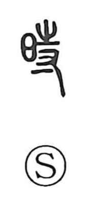

時

Kun: toki, doki | On: ji
time ・ hour ・ season ・ calendar
Explanation
時 is a phono-semantic character. The sun graph 日 sets the temporal scene, while 寺 provides the on reading ji and carries the sense of holding or maintaining—an idea that also lies behind 持, to hold in the hand. Transferring this notion from physical grasp to duration, 時 came to express what is kept or sustained as time unfolds. Hence its everyday uses for toki (time, moment), extended to seasonal time as well. In the Analects (XV, 11), the phrase to follow the Xia division of time refers to adopting the Xia agricultural calendar, showing that 時 can also mean the calendar or regulated seasonal time.